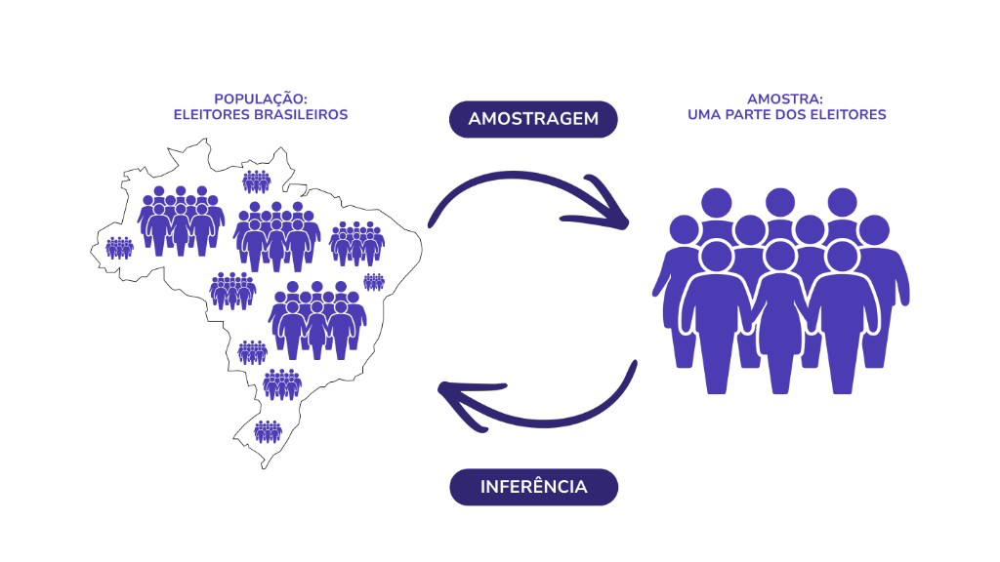

Módulo 1 | Aula 3
Estatística Avançada
Inferência Estatística
A inferência estatística parte do pressuposto que temos uma amostra, de preferência aleatória, da população. Por quê? Quando a população que desejamos estudar é muito grande, de difícil acesso a todas as unidades de observação (por exemplo, todas as pessoas do Brasil), selecionamos uma amostra dessa população. A partir dessa amostra que fazemos inferência para a população com base na teoria das probabilidades.
Então, a inferência estatística é um conjunto de técnicas que permitem fazer afirmações (extrapolações) sobre características de uma população tomando como base os resultados observados na amostra (figura 1).
Figura 1: Ilustração sobre inferência estatística.

Fonte: Adaptado de Barbetta (2002).
Relembrando os conceitos apresentados na aula sobre análise exploratória, população é o conjunto de indivíduos (observações), tendo pelo menos uma variável em comum e, amostra é qualquer subconjunto dessa população.
Adicionalmente, temos mais três conceitos importantes: parâmetro, estimador e estimativa.
É uma medida usada para descrever uma característica da população.
O estimador de um parâmetro populacional é uma variável aleatória, que é função dos elementos amostrais.
É o valor numérico obtido pelo estimador (ou estatística) em uma certa amostra.
Em referência à figura 1, os eleitores brasileiros com 16 anos ou mais formam a população. Para realizar uma pesquisa com todos os eleitores brasileiros ficaria inviável. Então, nesse caso, faz sentido selecionar uma amostra dessa população. Poderíamos estar interessados em saber, por exemplo, a média de idade dos eleitores. Assim, o parâmetro é a média populacional e estimativa é a média na amostra.